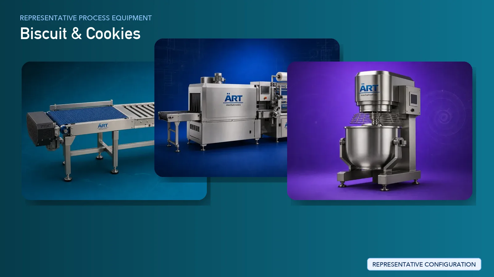

Biscuit & Cookie Manufacturing Plant & Machinery Solutions
Biscuit and cookie manufacturing is a major segment in the global food and FMCG industry, producing a wide range of products such as glucose biscuits, cream biscuits, crackers, digestive biscuits, and premium cookies. The process requires precise ingredient mixing, controlled dough forming,…

About Biscuit & Cookies processing
ART Mechatronics provides complete turnkey solutions for biscuit and cookie manufacturing plants, offering advanced systems for mixing, forming, baking, cooling, and packaging. Our solutions are designed for high-speed continuous production, consistent product quality, and efficient large-scale operations for domestic and export markets.
Complete Biscuit & Cookie Process Flow
Ingredients such as flour, sugar, fats, milk powder, and additives are received and fed into the system.
Ensures accurate formulation and consistency.
Ingredients are mixed to form dough or batter.
Ensures:
- Uniform mixing
- Proper dough consistency
Dough is sheeted or prepared for shaping.
Machines Used:
- Rotary Cutter
- Cookie Line:
- Dough is deposited
Machines Used:
- Rotary Depositor
Produces:
- Different shapes and designs
- Consistent product size
Products are baked in controlled temperature zones.
Ensures:
- Uniform baking
- Proper texture and color
Baked products are cooled before packaging.
Prevents moisture buildup and breakage.
Biscuits are filled with cream layers.
Final inspection ensures product quality.
Finished biscuits and cookies are packed into pouches or trays.
Ensures:
- Hygienic packaging
- Long shelf life
Machinery Required for Biscuit & Cookie Plant
- Material Handling Systems
- Ingredient Dosing System
- Dough Mixer / Cream Mixer
- Dough Feeder
- Sheeter
- Rotary Cutter / Rotary Depositor
- Tunnel Oven
- Cooling Conveyor
- Cream Sandwiching Machine
- Inspection System
- Packaging Machines
Turnkey Biscuit & Cookie Plant Solutions
ART Mechatronics offers complete turnkey solutions for biscuit and cookie manufacturing plants, including:
- Process design & plant layout
- Dough preparation systems
- Forming and baking systems
- Cooling and packaging lines
- Automation & control panels
- Installation & commissioning
- After-sales support
We customize solutions based on:
- Product type (biscuit, cookie, cream biscuit)
- Production capacity
- Automation level
- Packaging format
Why Choose Art Mechatronics
- Expertise in large-scale bakery processing systems
- Fully automated continuous production lines
- High-speed manufacturing capability
- Consistent product quality
- Hygienic food-grade machinery design
- Global export capability
Machinery in a Biscuit & Cookies plant
Where it's used
Get pricing & specs for the Biscuit & Cookies plant
Share the product, target capacity, current process and plant location. These details help our engineers discuss the right machine or line configuration.
One partner, from design to start-up
ART Mechatronics designs, manufactures, installs and commissions your Biscuit & Cookies solution with regional presence in India, UAE and Thailand.